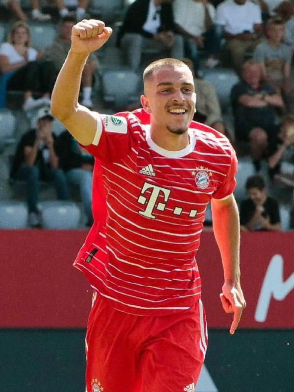

Arijon Ibrahimovic
Player Information
First Name: Arijon
Last Name: Ibrahimovic
Number: 46
Date of Birth: December 11, 2005
Age: 17
Height: 176cm / 5'9"
Dominant Foot: Right
Nationality: Germany
Positions: RW, LW, AM
Background
Arijon Ibrahimovic began his journey with FC Bayern Campus at the age of 13, after making the switch from FC Nürnberg. He started as a forward for the club's U17s and U19s teams, and also played for their reserves team. After showcasing his skills and potential, Ibrahimovic earned a spot in the Bayern first team in January 2023. However, he hasn't started a single game for Bayern's main team.
Statistics
Statistics for Ibrahimovic's 2021-22 Bundesliga season:
- Appearances: 0
- Goals: 0
- Assists: 0
- Yellow Cards: 0
- Red Cards: 0
Play Style
Arijon Ibrahimovic is a young player who appeared in only a few games at Bayern Munich. Thus, his play style is not fully understood. However, in his few appearances, fans noticed Ibrahimovic for his dribbling and confidence. He was not afraid to take on senior players in 1v1 duels, bravely going into dribbles and demonstrating his footwork.